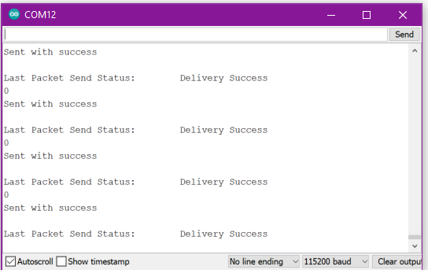
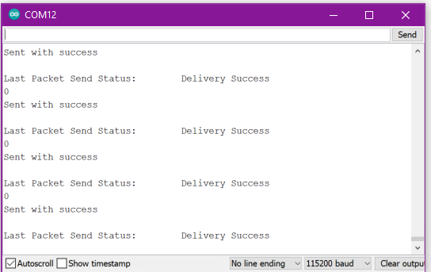

I used the code below found on Random Nerd Tutorials to do this. After you upload this code, open the serial monitor, change the Baud rate to 115200 and then reset the board.
// Complete Instructions to Get and Change ESP MAC Address: https://RandomNerdTutorials.com/get-change-esp32-esp8266-mac-address-arduino/
#include "WiFi.h"
void setup(){
Serial.begin(115200);
WiFi.mode(WIFI_MODE_STA);
Serial.println(WiFi.macAddress());
}
void loop(){
}
/*
based on Rui Santos
Complete project details at https://RandomNerdTutorials.com/esp-now-esp32-arduino-ide/
Send (from adafruit board).
*/
#include
#include
// REPLACE WITH YOUR RECEIVER MAC Address
uint8_t broadcastAddress[] = {0x24, 0x62, 0xAB, 0xD2, 0x8D, 0x68}; //this is dot board the receiver; this line is for the sender
//uint8_t broadcastAddress[] = {0x24, 0x62, 0xAB, 0xD2, 0x76, 0x2C}; //this is the board (no dot) that is the primary sender
//int myData = 0;
const int GSR = 32;
int sensorValue=0;
int gsr_average=0;
// callback when data is sent
void OnDataSent(const uint8_t *mac_addr, esp_now_send_status_t status) {
Serial.print("\r\nLast Packet Send Status:\t");
Serial.println(status == ESP_NOW_SEND_SUCCESS ? "Delivery Success" : "Delivery Fail");
}
void setup() {
// Init Serial Monitor
Serial.begin(115200);
// Set device as a Wi-Fi Station
WiFi.mode(WIFI_STA);
// Init ESP-NOW
if (esp_now_init() != ESP_OK) {
Serial.println("Error initializing ESP-NOW");
return;
}
// Once ESPNow is successfully Init, we will register for Send CB to
// get the status of Trasnmitted packet
esp_now_register_send_cb(OnDataSent);
// Register peer
esp_now_peer_info_t peerInfo;
memcpy(peerInfo.peer_addr, broadcastAddress, 6);
peerInfo.channel = 0;
peerInfo.encrypt = false;
// Add peer
if (esp_now_add_peer(&peerInfo) != ESP_OK){
Serial.println("Failed to add peer");
return;
}
}
void loop() {
long sum=0;
for(int i=0;i<10;i++) //Average the 10 measurements to remove the glitch
{
sensorValue=analogRead(GSR);
sum += sensorValue;
delay(5);
}
gsr_average = sum/10;
Serial.println(gsr_average);
// Send message via ESP-NOW
esp_err_t result = esp_now_send(broadcastAddress, (uint8_t *) & gsr_average, sizeof(gsr_average));
if (result == ESP_OK) {
Serial.println("Sent with success");
Serial.println(gsr_average);
}
else {
Serial.println("Error sending the data");
}
delay(10);
}
/*
Rui Santos
Complete project details at https://RandomNerdTutorials.com/esp-now-esp32-arduino-ide/
Permission is hereby granted, free of charge, to any person obtaining a copy
of this software and associated documentation files.
The above copyright notice and this permission notice shall be included in all
copies or substantial portions of the Software.
*/
#include
#include
int gsr_average = 0;
//const int ledPin = 21;
// callback function that will be executed when data is received
void OnDataRecv(const uint8_t * mac, const uint8_t *incomingData, int len) {
memcpy(&gsr_average, incomingData, sizeof(gsr_average));
// Serial.print("Bytes received: ");
// Serial.println(len);
// Serial.print("byte: ");
// Serial.println(myData);
}
void setup() {
// Initialize Serial Monitor
Serial.begin(115200);
// Set device as a Wi-Fi Station
WiFi.mode(WIFI_STA);
// Init ESP-NOW
if (esp_now_init() != ESP_OK) {
Serial.println("Error initializing ESP-NOW");
return;
}
// Once ESPNow is successfully Init, we will register for recv CB to
// get recv packer info
esp_now_register_recv_cb(OnDataRecv);
// configure PWM functionalitites
// ledcSetup(ledChannel, freq, resolution);
// attach the channel to the GPIO to be controlled
// ledcAttachPin(ledPin, ledChannel);
}
void loop() {
// int dutyCycle=0;
// int setpoint = gsr_average;
// int sensorValue = analogRead(32);
// int delta_v = setpoint - sensorValue;
// if (delta_v < 0) dutyCycle = 0;
// else dutyCycle = delta_v *10;
//if (dutyCycle > 4095) dutyCycle = 4095;
// /ledcWrite(ledChannel, 4095 - dutyCycle); //using L9110 board, which is active LOW.
// Serial.print("remote setpoint = ");
// Serial.print(myData);
//Serial.print(", local value = ");
//Serial.print(sensorValue);
Serial.print(gsr_average);
//?/ Serial.print(", ");
// Serial.println(dutyCycle);
delay(100);
}
 
